CherrygroveRoute29Approach · 05 Ledges | Joined run 1
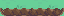
Source cells [15, 16, 4, 1]
Native tiles and collision, restricted to the source tileset pair. Placement copies ground too; use a matching ground context. Door events are separate.

Source cells [15, 16, 4, 1]
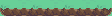
Source cells [22, 16, 7, 1]
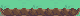
Source cells [14, 20, 5, 1]
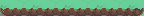
Source cells [22, 20, 9, 1]
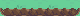
Source cells [31, 24, 5, 1]
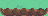
Source cells [49, 20, 3, 1]
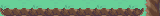
Source cells [68, 24, 10, 1]
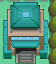
Source cells [49, 4, 7, 8]
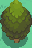
Source cells [96, 26, 2, 3]
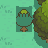
Source cells [20, 12, 3, 3]
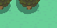
Source cells [82, 16, 4, 2]